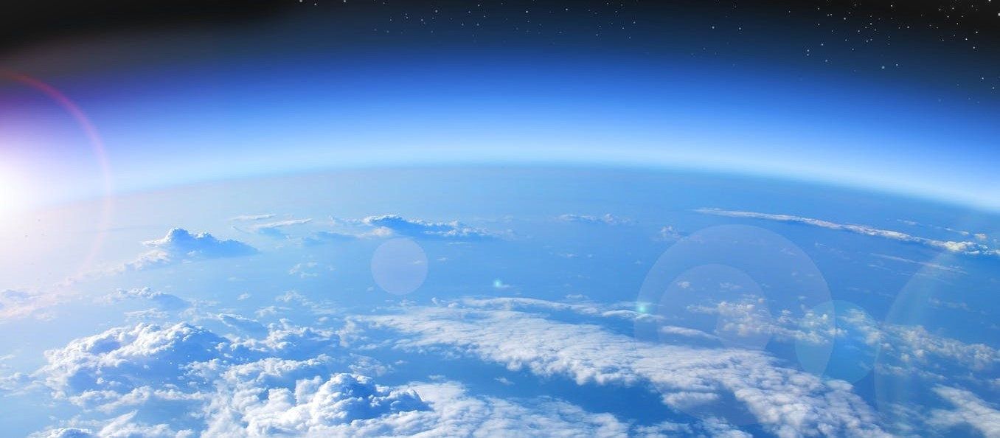

We live on Earth, a sphere of air. As aquatic creatures live in water, we are living under a thin layer of air, which is called Atmosphere. We do not see the air but, we can feel it when the wind blows.
Atmosphere just like the oceans and crust layer of Earth, contains a lot of chemical materials; When we start breathing, burning fuels and performing other various industrial process, actually, we are using some the existing gases in the atmosphere.
In addition to humans and other creatures, natural phenomena also increase the volume of gases, liquid drops and suspended solid particles in the atmosphere.
Anyway, those increased materials, might not be affecting on the chemical composition of the atmosphere but it may influence on the local environment or global conditions.
In some areas of Earth, the air is so polluted that people get sick from breathing; In some conditions the air pollution reaches a level that people lose their life. It is hoped that such incident, never happens, otherwise, it requires more than a hope.